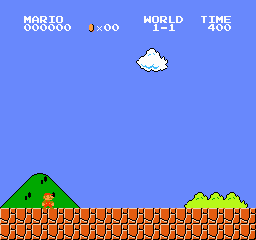

MARIO
WORLD
TIME
OOOOOO
 x OO
1 - 1
111
x OO
1 - 1
111


MARIO
WORLD
TIME
OOOOOO
x OO
1 - 1
111


Visualisation des 5 meilleures parties sur 100 |
|
|---|---|
| Après 100 parties |  |
| Après 1 000 parties | |
| Après 10 000 parties | |
| Après 50 000 parties | |
| Après 100 000 parties | |